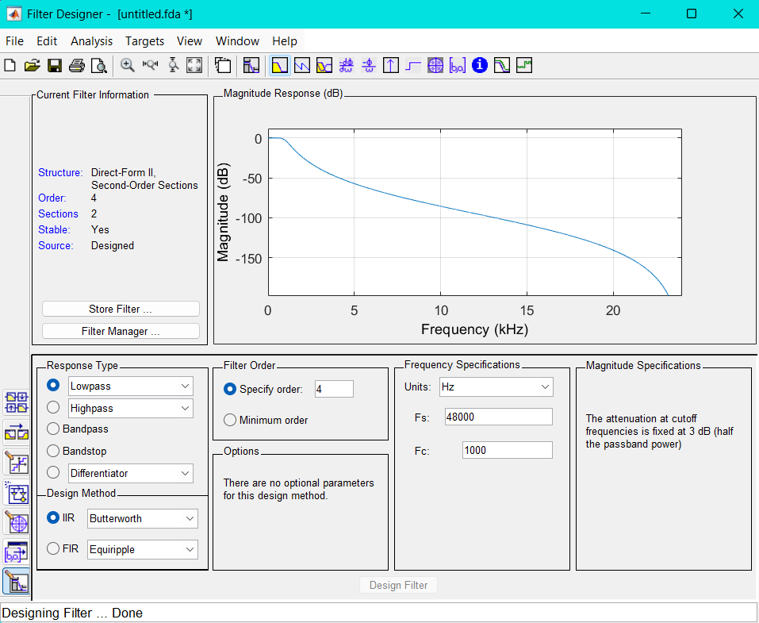
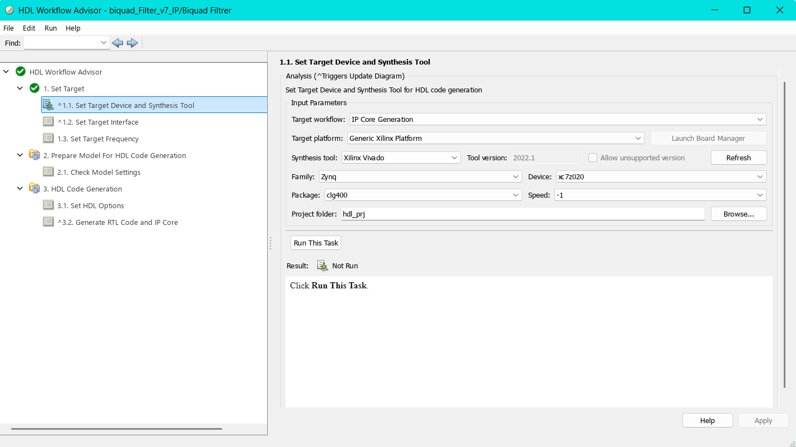
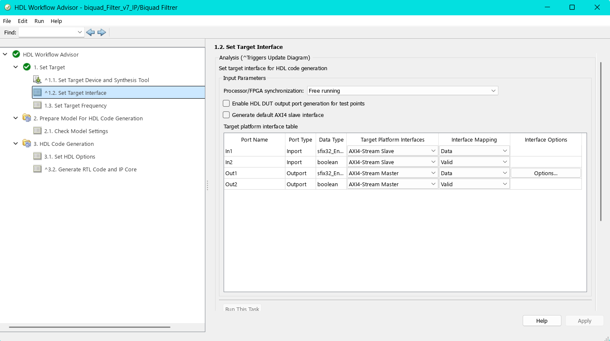
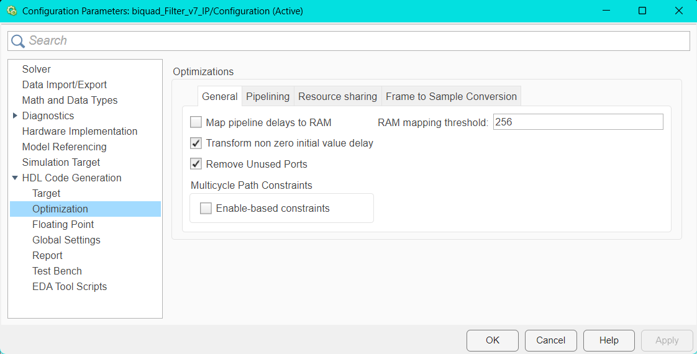

Filterdesing und Implementierung
Hier wird beschrieben, mit welcher Software die Filter entworfen werden. Auf die genauen Spezifikationen und deren Begründung wird an anderer Stelle eingegangen. In diesem Abschnitt steht der Prozess im Fokus, welche Schritte unternommen werden, um einen Filter auf dem Pynq-Z2 zu implementieren.
Filterdesign in Matlab
Die Filter werden entsprechend der gewünschten Spezifikationen mit dem Matlab Filter Designer entworfen. Für einen Biquad-Filter wird im Filter Designer ein IIR-Filter erstellt und die Koeffizienten als SOS-Matrix inklusive Gain in das Workspace exportiert. Es empfiehlt sich, das Workspace mit den Koeffizienten und dem Gain separat zu speichern, um diese bei Bedarf einfach wiederverwenden zu können.

Der entworfene Filter kann in Matlab mit einem Testsignal angewendet werden, um sicherzustellen, dass seine Eigenschaften den Anforderungen entsprechen.Für die weitere Verarbeitung werden folgende Matlab-Pakete sowie deren Abhängigkeiten benötigt: - Simulink - DSP System Toolbox - HDL Coder
Die hier verwendete Matlab-Version ist R2024b. Auch spätere Matlab-Versionen sollten kompatibel sein, sofern die erforderlichen Add-On-Pakete weiterhin unterstützt werden.
Simulink
Für die Implementierung wird das Modell des Filters in Simulink entworfen, aus welchem später mit dem HDL coder ein AXI-Stream Fähiger IP-Core für Vivado 2022.1 generiert wird.
Für die Umsetzung in Simulink wurde der bereits in der DSP HDL Toolbox enthaltene Block Biquadratic IIR (SOS) filter verwendet. Der Vorteil dieses Blocks gegebüber einer eigenen Struktur liegt darin, dass er speziell für die HDL-Codegenerierung optimiert ist und bereits eine integrierte Steuerung des valid-Signals mitbringt, ein notwendiges Element für die AXI-Stream-Implementierung. Die Filterkoeffizienten werden über das Kontextmenü direkt aus dem Matlab-Workspace geladen. Aus Gründen der numerischen Stabilität und zur Vermeidung sehr kleiner Rechenwerte wird der Gain-Faktor bereits im Vorfeld in die Zähler-Koeffizienten (Numerator) eingerechnet.
Es wurde der Datentyp fixdt(1,32,16) verwendet. Dieser entspricht einem signed 32-Bit-Festkommawert mit 16 Bits für die Nachkommastellen. Der Typ wurde sowohl in Simulink als auch in der späteren Hardwareimplementierung experimentell getestet und hat sich dabei als optimal herausgestellt. Er bietet ein gutes Gleichgewicht zwischen Rechengenauigkeit und Ressourceneffizienz, wobei Quantisierungsfehler minimal gehalten werden konnten. Aus diesem Grund wird dieser Datentyp fortan konsequent für alle relevanten Signalpfade verwendet.


Wie ersichtlich ist, werden die Numerator-Koeffizienten direkt aus der im Workspace gespeicherten SOS-Matrix übernommen. Zusätzlich wird der Gain-Faktor in die Numerator-Koeffizienten eingerechnet. Die Denominator-Koeffizienten (a-Koeffizienten) werden in gleicher Weise aus der SOS-Matrix bezogen.
Als Filterstruktur wurde Direct Form II gewählt, da sich diese Struktur besonders gut für die Hardware-Implementierung eignet, sie benötigt weniger Speicherressourcen, insbesondere in Form von Delay-Elementen.
Die Einstellung der Datentypen basiert auf den Standardeinstellungen der verwendeten Blöcke. In dieser Konfiguration übernimmt der Filter automatisch den Datentyp des Eingangssignals, wodurch auch die Koeffizienten intern entsprechend konvertiert werden. Um den gewünschten Datentyp explizit festzulegen, wird vor dem Eingang des Filtersystems ein Data Type Conversion-Block eingesetzt.
Hier wurde fixdt(1,32,16) als Datentyp gewählt. Dies entspricht einem signed 32 Bit breiten Weret mit 16 Bits für die Nachkommerstelle. DIeser wert wurde durch Testen in Simulink und später in hardware experimentell ermittelt und hat sich als optimaler datentyp mit minimalen quantesierungsfehlern herausgestellt und wirde fortan verwendet.
Für jeden Biquad-Abschnitt wurde ein separater Biquadratic IIR Filter-Block aus der DSP HDL Toolbox verwendet. Diese Filterstruktur wurde in ein eigenes Subsystem eingebettet. Dies ist notwendig, da im Simulink-Modell zusätzliche Test- und Steuerungselemente integriert sind, die nicht Teil der späteren HDL-Implementierung sind.
{kind=link}
Das gesamte Simulink-Modell enthält zusätzlich zu den Filterblöcken verschiedene Komponenten zur Test- und Signalanalyse. Dazu gehören Elemente, die Testsignale aus dem Workspace einlesen, ein gültiges AXI-Stream Valid-Signal zur Simulation erzeugen sowie – wie bereits erwähnt, den Datentyp des Eingangssignals über einen Data Type Conversion-Block anpassen.
Zur Visualisierung sind Scopes eingebunden, die einen schnellen Überblick über den Signalverlauf ermöglichen. Darüber hinaus wird das Ausgangssignal in das Workspace zurückgeführt, um es anschließend in MATLAB weiter analysieren und verifizieren zu können.
{kind=link}
Vorbereitung für HDL-Coder
Damit das Simulink-Modell für den HDL-Coder verwendet werden kann muss, neben den HDL-Coder kompatiblen Blöcken, einige einstellungen in Simulink selbst dirchgeführt werden.
Dieses Setupt lässt ich im Comand Window in Matlab austomatisch gestallten, mit der Voraussetzung, dass Vivado instaliert ist.
Für dieses Projekt wird Vivado 2022.1 verwendet, das dies die aktuellste Version ist die zum aktuellen Zeit von Pynq unterstützt wird. Diese Information geht aus dem Pynq: Change Log aus.
Das Setup in Simulink lässt sich mit der Funktion hdlsetup(modelname) ausführen. Diese Funktion konfiguriert das geöffnete Modell für den HDL-Workflow, indem sie notwendige Pfade und Einstellungen für den HDL Coder ergänzt. Sie bereitet Simulink gezielt für die Codegenerierung und FPGA-Implementierung vor.
Die Funktion muss pro Modell nur einmalig ausgeführt werden. Nach erfolgreicher Ausführung wird das Simulink-Modell typischerweise durch einen roten Rahmen markiert, ein Hinweis darauf, dass es für die HDL-Codegenerierung vorbereitet ist.
Die Funktion hdlsetuptoolpath(path) konfiguriert den Pfad zu externen Synthese-Tools, z. B. Xilinx Vivado, die für die Synthesis, das Place & Route sowie die Bitstream-Erzeugung benötigt werden. Dieser Schritt ist erforderlich, damit die HDL Workflow Advisor-Umgebung später auf die notwendigen Werkzeuge zugreifen und einen IP-Core generieren kann.
Der Befehl sollte vor dem Öffnen des HDL Workflow Advisor ausgeführt werden, andernfalls kann der Toolpfad nicht korrekt übernommen werden. Es empfiehlt sich daher, diesen Befehl in ein MATLAB-Skript zu integrieren, um eine konsistente und automatisierte Projektumgebung sicherzustellen.
HDL Workflow Advisor
Der HDL Workflow Advisor wird hier für die generierung eines Axi-Stream fähigen IP-Cores verwendet. Hier die vorgenommenden Einstellungen:
1.1 Set Target Device and Synthesis Tool

Hier wird die Zielhardware eingestellt. - Target workflow: IP Core Generation: Einstellung für IP-Core generierung. - Target platform: Generic Xilinx Platform: Es wird keine Boardspezifische Plattform ausgewählt, sondern eine generische Xilinx-Zielumgebung. - Synthesis tool: Xilinx Vivado (Version 2022.1): Gibt an, dass Vivado für die Synthese und IP-Integration verwendet werden soll. - Family, Device, Package und Speed: Zynq, xc7z020, clg400 und -1: Dies sind die Notwendigen Einstellungen für den Pynq-Z2, Package und Speed wurden automatisch eingestellt. -Project folder: path: Ort an dem die generierte IP gespeichert werden soll.
1.2 Set Target Interface

In diesem Schritt werden die Ports des Simulink-Modells den Schnittstellen der AXI-Stream-Plattform zugewiesen. Die Option Processor/FPGA Synchronization ist auf Free running gesetzt, da die spätere Anwendung als kontinuierlicher Datenstrom (Streaming) ausgelegt ist. Diese Einstellung sorgt dafür, dass die Verarbeitung unabhängig vom Prozessor-Takt erfolgt.
Die Übersicht in der Tabelle bietet zusätzlich einen guten Überblick über die zugewiesenen Datentypen der Ports. Bei den Signalen In1 und Out1 ist erkennbar, dass der zuvor über einen Data Type Conversion-Block eingestellte Festkommadatentyp übernommen wurde.
Wichtig ist außerdem, dass die Ein- und Ausgänge für das Valid-Signal (In2 und Out2) den Datentyp boolean besitzen, da dies der AXI-Stream-Konvention entspricht.
Für den Ausgang Out1 kann über die Schaltfläche Options zusätzlich die Größe des Ausgangspuffers konfiguriert werden. Standardmäßig ist dieser auf 1024 Bits eingestellt. Passe hier den Wert an am Finalen Design, kann kleiner werden aus Optimierungsgründen!
Der Haken bei Generate default AXI4 slave interface sollte entfernt werden, sofern er gesetzt ist. Andernfalls wird automatisch eine AXI4-Lite-Schnittstelle erzeugt. Diese wird üblicherweise für die Registersteuerung verwendet.
Da die hier entwickelte IP jedoch für einen kontinuierlichen Datenstrom (Streaming) ausgelegt ist, ist eine Steuer-Schnittstelle nicht erforderlich. Sie würde das Design unnötig verkomplizieren und zusätzlichen Ressourcenverbrauch verursachen.
1.3 Set Target Frequency
An dieser Stelle wird die Zielfrequenz der zu generierenden IP festgelegt. Ursprünglich war diese auf 100 MHz gesetzt. Da jedoch bei der späteren Bitstream-Erzeugung die Timing-Anforderungen nicht erfüllt werden konnten, wurde die Frequenz auf 50 MHz halbiert. Diese reduzierte Taktfrequenz zeigte im Design stabile Timingergebnisse und wurde daher für die weitere Implementierung beibehalten.
2.1 Check Model Settings
In diesem Schritt werden die verwendeten Simulink-Blöcke daraufhin überprüft, ob sie für die HDL-Codegenerierung geeignet sind. Zusätzlich kann ein sogenannter Industry Standard Check durchgeführt werden, der das Modell hinsichtlich Industriestandards bewertet. Dabei werden häufig Warnungen ausgegeben, insbesondere bezüglich der Namenskonventionen, wenn diese nicht den typischen Industriestandards entsprechen.
Für die hier verfolgte Anwendung ist es nicht erforderlich, den Industry Standard Check zu aktivieren, und es wird empfohlen, diesen nicht auszuführen, um unnötige Warnmeldungen zu vermeiden.
3.1 Set HDL Options
Optimaziation/General

Die Einstellungen wurden größtenteils unverändert übernommen. Es ist jedoch wichtig sicherzustellen, dass die Option Enable-based constraints deaktiviert ist.
Diese Funktion erzeugt zusätzliche Timing-Beschränkungen auf Basis von Enable-Signalen, was bei einfacheren Designs oder kontinuierlich laufenden IPs zu unerwünschten Timingproblemen führen kann.
Optimaziation/Pipelining 
Auch in diesem Schritt wurden die Einstellungen weitgehend unverändert belassen. Es wird jedoch empfohlen, die Optionen „Clock-rate pipelining“ und Adaptive pipelining zu aktivieren.
Zwar lässt sich die IP auch ohne diese Optionen generieren, jedoch ermöglichen sie eine automatische Optimierung der Pipeline-Struktur. Dies kann insbesondere bei komplexeren Designs helfen, Timing-Anforderungen besser zu erfüllen und die Performance zu verbessern.
Global Settings 
Die Einstellungen in diesem Schritt wurden größtenteils automatisch gewählt. Es ist jedoch unbedingt sicherzustellen, dass der Reset type auf Synchronous und der „Reset asserted level“ auf Active-high gesetzt ist.
Andernfalls können beim Generieren der IP im abschließenden Bericht Warnungen oder Fehler auftreten, die auf eine inkorrekte Reset-Konfiguration hinweisen.
3.2 Generate RTL Code and IP Core

In diesem Schritt wurden die Einstellungen automatisch gewählt. Hier lässt sich der zu generierende IP-Core benennen und eine Versionsnummer vergeben. Für die IP sollte ein aussagekräftiger Name gewählt werden, damit sie später in Vivado leicht auffindbar ist.
Um die IP zu generieren und alle vorgenommenen Einstellungen anzuwenden und zu überprüfen, klickt man mit der rechten Maustaste auf den Schritt 3.2 Generate RTL Code and IP Core und wählt Run to Selected Task aus. Dadurch werden alle vorherigen Schritte automatisch durchlaufen. Tritt dabei ein Fehler auf oder wird eine Prüfung nicht bestanden, wird der Vorgang an der entsprechenden Stelle unterbrochen.
Nach kurzer Generierungszeit wird die IP erstellt und ein Bericht (Report) geöffnet. Dieser enthält sowohl eventuelle Warnungen als auch den generierten HDL-Code. Der vollständige Report gibt zusätzlich einen Überblick über die verwendeten Ressourcen, beispielsweise zur Nutzung von LUTs, Flip-Flops oder Multiplikatoren..